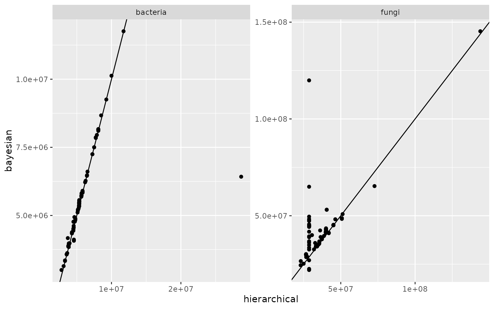
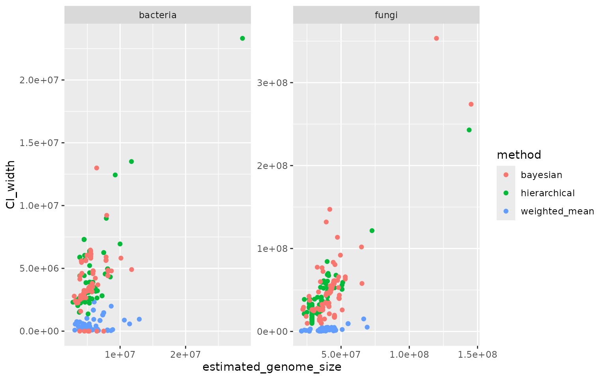
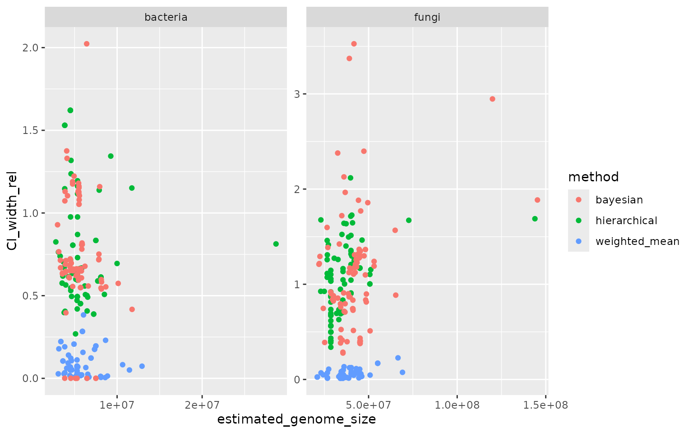
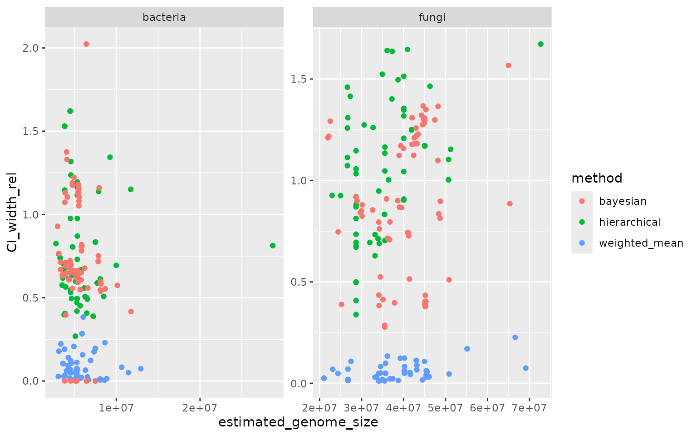

Comparing estimation methods
compare_methods.RmdFirst a bit of wrangling to combine all results:
res_wm <- read.csv("results_weighted_mean.csv") %>%
select(X, COUNT,SAMPLE,SCIENTIFIC_NAME,TAXID, genome_size_estimation_rank, estimated_genome_size,
genome_size_estimation_status, confidence_interval_lower,confidence_interval_upper) %>%
mutate(method="weighted_mean")
res_wm$X <- gsub("V","query...", res_wm$X)
res_lmm <- read.csv("results_lmm.csv") %>%
mutate(genome_size_estimation_rank = res_wm$genome_size_estimation_rank) %>%
select(X, COUNT,SAMPLE,SCIENTIFIC_NAME,TAXID, genome_size_estimation_rank, estimated_genome_size,
genome_size_estimation_status, confidence_interval_lower,confidence_interval_upper) %>%
mutate(method = "hierarchical")
res_bayes <- read.csv("results_bayesian.csv") %>%
mutate(genome_size_estimation_rank = res_wm$genome_size_estimation_rank) %>%
select(X, COUNT,SAMPLE,SCIENTIFIC_NAME,TAXID, genome_size_estimation_rank, estimated_genome_size,
genome_size_estimation_status, confidence_interval_lower,confidence_interval_upper) %>%
mutate(method = "bayesian")
#put together
res <- bind_rows(res_wm,res_lmm,res_bayes)
#add CI width and relative CI width
res <- res %>%
mutate(CI_width = confidence_interval_upper - confidence_interval_lower) %>%
mutate(CI_width_rel = CI_width/estimated_genome_size)
#add whether the sample has fungi or bacteria
res <- res %>%
mutate(sample_type = ifelse(grepl("16S",SAMPLE), "bacteria","fungi"))1. Comparing estimation success
1.a. Estimates
res %>%
filter(is.na(estimated_genome_size)) %>%
group_by(method,genome_size_estimation_status) %>%
summarise(NA_count=n())## # A tibble: 2 × 3
## # Groups: method [1]
## method genome_size_estimation_status NA_count
## <chr> <chr> <int>
## 1 weighted_mean Confidence interval to estimated size ratio > ci_thres… 3
## 2 weighted_mean Not enough genome size references for close taxa 17The Bayesian method outputs results for any taxon that is recognised in NCBI taxonomy. The frequentist random effects model method only outputs results for queries that have a match at the species, genus, or family level. The weighted means method only performs an estimation for queries that have at least two matches at the species, genus, family, or order level.
1b. Confidence intervals
When applying the Bayesian method, some cases an estimate is provided but confidence intervals are missing.
res %>%
filter(!is.na(estimated_genome_size)) %>%
filter(is.na(confidence_interval_lower) | is.na(confidence_interval_lower)) %>%
group_by(method,genome_size_estimation_rank) %>%
summarise(count=n())## `summarise()` has grouped output by 'method'. You can override using the
## `.groups` argument.## # A tibble: 3 × 3
## # Groups: method [1]
## method genome_size_estimation_rank count
## <chr> <chr> <int>
## 1 bayesian family 3
## 2 bayesian genus 5
## 3 bayesian no rank 1These cases correspond to queries where the NCBI database has genome size information at the species level or below. The Bayesian model was run on the database where genome size values were averaged across all ranks at and below species level, only giving one value per species. The estimation process therefore returns that averaged value, with no uncertainty bounds.
2. Differences in estimates
The estimates (based on means) are summarised below for the 3 methods across the two sample types.
ggplot(res, aes(x=method, y=estimated_genome_size)) +
geom_boxplot() +
facet_wrap(~sample_type, scale="free")## Warning: Removed 20 rows containing non-finite outside the scale range
## (`stat_boxplot()`).
Below is a 1-to-1 comparison of the Bayesian and the frequentist modelling method:
res_wide <- res %>%
select(X, sample_type,method,estimated_genome_size) %>%
pivot_wider(names_from = "method", values_from = "estimated_genome_size")
res_wide %>%
ggplot(aes(x=hierarchical,y=bayesian)) +
geom_point() +
geom_abline(intercept=0, slope=1) +
facet_wrap(~sample_type, scale="free")
3. Uncertainty estimates across all queries
Below are the estimated confidence intervals for all queries with estimates
res %>%
filter(!is.na(estimated_genome_size)) %>%
ggplot(aes(x=estimated_genome_size, y=CI_width, colour = method)) +
geom_point() +
facet_wrap(~ sample_type, scale="free")## Warning: Removed 9 rows containing missing values or values outside the scale range
## (`geom_point()`).
The figure below shows confidence intervals as a proportion of the estimated size
res %>%
filter(!is.na(estimated_genome_size)) %>%
ggplot(aes(x=estimated_genome_size, y=CI_width_rel, colour = method)) +
geom_point() +
facet_wrap(~ sample_type, scale="free")## Warning: Removed 9 rows containing missing values or values outside the scale range
## (`geom_point()`).
#4. Comparing uncertainty estimates across queries with successful estimations in all three methods
Selecting queries that have estimates with all three methods provides a more thourough comparison of uncertainty estimates.
res_tax_complete <- res %>%
group_by(X) %>%
summarise(count_na = length(which(is.na(estimated_genome_size)))) %>%
filter(count_na == 0)
res_complete <- res %>% filter(X %in% res_tax_complete$X)Below is a similar figure as the previous one but with the selected queries
ggplot(res_complete, aes(x=estimated_genome_size, y=CI_width_rel, colour = method)) +
geom_point() +
facet_wrap(~ sample_type, scale="free")## Warning: Removed 9 rows containing missing values or values outside the scale range
## (`geom_point()`).